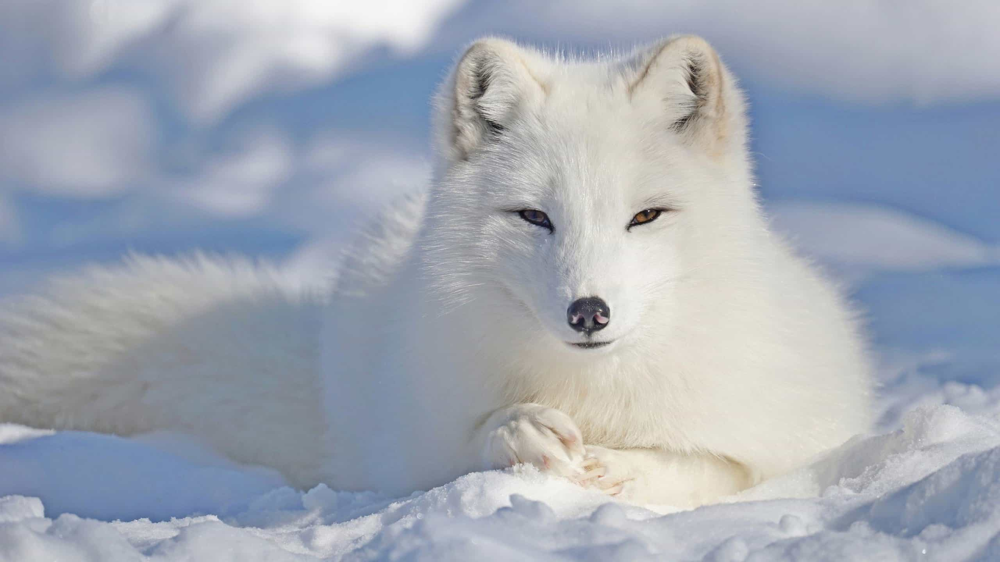

Artic Fox

Artic fox fur changes seasonally. Fluffy white coats in the winter; brownish or grayish in the summer.
Scientific Name: Vulpes Lagopus
Length: Up to 110 centimetres
Lifespan: 3-6 years
Habitat: Arctic and alphine tundra
A small fox well adapted to living in cold environments, and is best known for its thick, warm fur that is also used to camouflage.